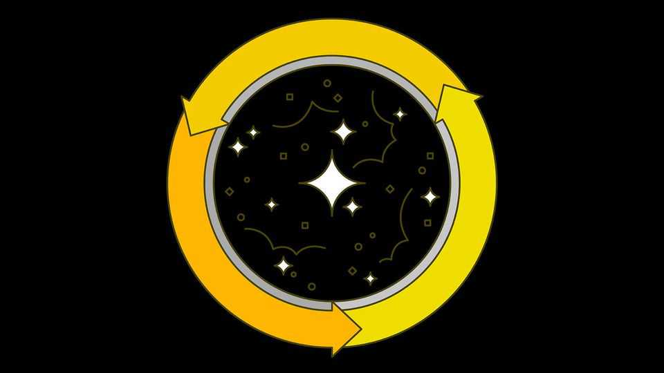
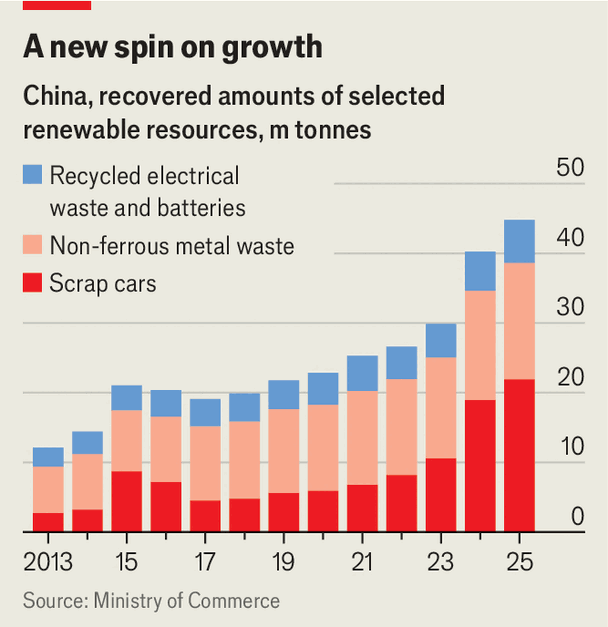

China is turning trash into treasure on a vast scale
EV batteries, especially, will help it secure supplies of critical minerals

Oct 15th 2026
The European Union worries about China’s vast exports of cheap electric vehicles. On October 12th it said that in December a quota of 350,000 a year would be imposed on hybrid-EV imports from China. This is expected to keep their market share below 10%. But the bloc also frets about China’s dominance over critical minerals used to make these vehicles.
A fast-growing number of EVs will soon be scrapped and replaced. Shredding their batteries yields “black mass”, a powder from which valuable metals such as lithium, cobalt and nickel can be recovered and reused. From next month the EU will make it harder to export this waste. The aim is to encourage more processing of black mass close to home (currently most is shipped to Asia). In August America, which has banned Chinese EVs but still imports lots of Chinese batteries, blocked all black-mass exports.
China, however, is unlikely to suffer. Black mass might meet 20-30% of global demand for battery metals by 2050, says the International Energy Agency, a forecaster. So China is supercharging its recycling industries to shore up supplies not just of battery metals, but also of rare earths and much else. The goal is to make the country’s economy less “linear” (where raw materials are made into products that are then thrown away) and more “circular” (closing the loop so recycled waste replaces raw materials).
Once recycling efforts were driven by concerns about pollution. Now, amid a global scramble for the materials needed to build a high-tech economy, security has become a primary motive.
The country has hard-earned experience in managing rubbish. It produces more than anywhere else: about 15% of the world’s municipal detritus (everything from the contents of household bins to street sweepings) and more than one-quarter of its industrial waste (such as demolition debris, factory effluent, scrap metal, slag and ash).
In the 1980s China started to import waste, taking the hardware, paper and plastic that richer countries did not want. A sprawling informal recycling sector emerged, led by scavengers picking through rubbish piles. Much ended up in landfills or burnt in the open air, leaching toxic chemicals and creating poisonous smog. A Chinese documentary in 2011 found that organic waste from dumps around Beijing was being turned into oil and sold to restaurants.
In 2013, wary of mounting public anger, China declared a “war on pollution” and released its first comprehensive national plan to create a circular economy. Electronics were directed to new “urban mining” zones to be scrapped safely; household rubbish was sent to specialised plants to be burned for power; the proportion of waste dumped in landfills started to fall. In 2017 China launched “Operation National Sword” to stop most imports of plastics (in 2021 all imports of solid waste were banned). State-run media trumpeted that the country was “no longer a dumping ground”. Over the past five years most of China’s cities have rolled out mandatory sorting of household rubbish.
China is still well behind squeaky-clean European countries when it comes to waste management (though it is hard to say how far, as it does not publish detailed national data for recycling). Its poorer rural areas are still often strewn with rubbish. But officials have made China’s big cities, at least, cleaner and more pleasant to live in. Now their focus is shifting to the use of recycling for the sake of security. In July China released a plan for the development of the circular economy until 2030. “The importance of resource security has become increasingly prominent, while geopolitical dynamics…have grown complex and severe,” the plan noted.
That judgment rests on two considerations. First, China wants to dominate high-tech manufacturing in everything from robotics to wind turbines. And second, to achieve this, it must secure supplies of raw materials, connect more power lines and build more data centres. Massive amounts of aluminium, copper, battery metals and rare earths are needed. While China controls the bulk of the global refining capacity for these materials, it relies on imports for most of the ores. Meanwhile many Western countries want to reduce reliance on China’s factories. Officials worry they may try to squeeze its supplies. Last year a researcher at a state-owned research facility said that, without recycling, China would “keep facing strangleholds in the future”.

China wants to use recycling to supply 510m tonnes of industrial materials annually by 2030, about one-third more than the current level. The easier part will be scaling up the recycling of steel, copper and aluminium: this kind of work is already a mature industry. Recycling more plastic is a little trickier, but worth it to help China reduce imports of oil. The hardest bit will be managing a growing tsunami of electronic garbage. By 2030 China expects to generate 0.5m tonnes of waste from wind turbines, 1m tonnes from EV batteries and 1.5-2m tonnes from solar panels every year—big shares of the global total.
The fact that China already makes vast quantities of these goods should make recycling simpler. Factories can tweak designs so that products are easier to dismantle later. And many battery-producing techniques (such as using acids and heat to isolate valuable metals) are also used in recycling them. Take CATL, for example, the world’s largest battery-maker. Most of the Chinese firm’s sales are domestic, and will end up being processed by a CATL subsidiary called Brunp, which is the world’s biggest battery-recycler. Such arrangements have helped China build 85% of global battery-recycling capacity.
Still, big challenges remain. Much of China’s recycling capacity is unused because too many batteries end up with informal scrap dealers (who waste much of the good stuff inside them) or are just dumped. In recent years several gangs have been busted for running illegal battery-collection rings. Solar panels and wind turbines, which are often used in remote parts of the country, present an even bigger collection problem. Valuable materials they contain (silver, for solar panels; and neodymium, a rare earth, for wind turbines) are present only in small quantities, making extraction trickier.
As ever, China hopes its tech-enabled state can overcome such difficulties. In 2024 it set up a new state-owned company called China Resources Recycling Group to co-ordinate and streamline recycling efforts, with a focus on cleantech products. Recycling plants have started using artificial intelligence to sort waste more efficiently. In April battery- and EV-makers were required to give their products digital IDs to track them through their life cycle on a state-run platform. They have also been made legally responsible for recycling the batteries they produce.
China says recycling already accounts for 10% of its supply of rare earths. It is trying to make the process more efficient. At present it is far more costly than extracting them from raw materials. Still, Chinese rare-earth companies, which are almost all state-owned, “do not rely on economic viability in all cases”, notes Corby Anderson of the Colorado School of Mines.
And to make sure its recycling plants are fed, China is also quietly reassuming its old role in the waste trade. It is selectively rolling back restrictions on some foreign waste. In 2024 it eased curbs on imports of some scrap copper and aluminium. Last year it started allowing imports of black mass. In January it slashed duties on the stuff from 6.5% to 3%. Officials have pledged to continue to increase imports of “high-quality” recycled materials over the next five years.
Now that America and Europe want to keep their valuable waste, could they eat into China’s recycling dominance? Zhang Yuping, the deputy general manager of GEM, a big Shenzhen-listed battery-recycler, thinks not. “From the perspective of national security, they might have some justification,” he says. But the cost of recycling outside China would be high and scaling up difficult. Europe, at least, “can’t digest” such a challenge, reckons Mr Zhang. “They would pay a heavy cost.” ■
Subscribers can sign up to Drum Tower, our new weekly newsletter, to understand what the world makes of China—and what China makes of the world.